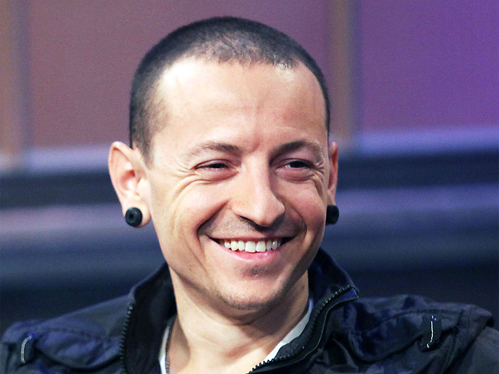

|Charles Bennington|
Di origini inglesi, olandesi e gallesi, Bennington era figlio di un poliziotto e di un'infermiera e trascorse i suoi primi vent'anni in Arizona. I suoi genitori divorziarono nel 1987, lasciandolo insieme ad un fratello e due sorelle. Dopo aver scelto di stare con il padre, fu incoraggiato dal fratello maggiore ad ascoltare gruppi come Foreigner, Loverboy e Rush, che citò tutti come propri ispiratori. A due anni imparò dal fratello a cantare un brano, Hot Blooded dei Foreigner.
Costretto dalla sua situazione familiare a spostarsi in varie città dell'Arizona (Scottsdale, Tolleson, Tempe), Bennington iniziò a fumare marijuana all'età di 11 anni. Non ebbe un'infanzia facile: dai 7 ai 13 anni fu molestato sessualmente da un ragazzo adolescente (che poi non denunciò perché scoprì che era a sua volta una vittima) e soffrì di dipendenza da droghe pesanti come LSD, oppio, metanfetamina ed eroina. Dovette inoltre saltare da un liceo all'altro (Centennial High School, Greenway High School), finché nel 1995 si diplomò alla Washington High School. In tarda adolescenza, cominciò a lavorare come barista nella caffetteria Bean Tree.
Il 12 maggio 1996 diventò padre di Jaimie, avuto da una relazione giovanile con Elka Brand. Lo stesso anno Bennington conobbe Samantha Marie Olit mentre lavorava ad un fast food Burger King ed il 31 ottobre successivo la sposò. Dalla loro unione è nato Draven Sebastian il 19 aprile 2002. I due hanno divorziato il 2 maggio 2005 e Bennington si è risposato il 31 dicembre successivo con la modella di Playboy Talinda Bentley. Il 16 marzo 2006 è nato il primo figlio della coppia, Tyler Lee; nello stesso anno Bennington ha adottato Isaiah (fratello di Jaime, avuto da Brand e da un altro uomo). L'11 novembre 2011 Talinda dà alla luce le gemelle Lilly e Lila.
Il 14 ottobre 2007, durante il concerto tenuto dai Linkin Park a Melbourne, Bennington si fratturò un polso dopo aver fatto un salto. Nonostante l'infortunio, continuò l'esibizione sino alla fine sopportando il dolore. Il 19 gennaio 2015, poco prima del concerto ad Indianapolis (terza tappa del The Hunting Party Tour), Bennington ha subito un nuovo infortunio, questa volta alla caviglia, costringendo il gruppo ad annullare il tour nei giorni seguenti. Nonostante ciò, il cantante ha preso parte al concerto di Indianapolis vincolato nei movimenti da un gesso e dalle stampelle.
Il 20 luglio 2017 Bennington è stato trovato senza vita nella sua residenza a Palos Verdes Estates in California. Secondo quanto riportato dal medico legale, il cantante si è suicidato tramite impiccagione.